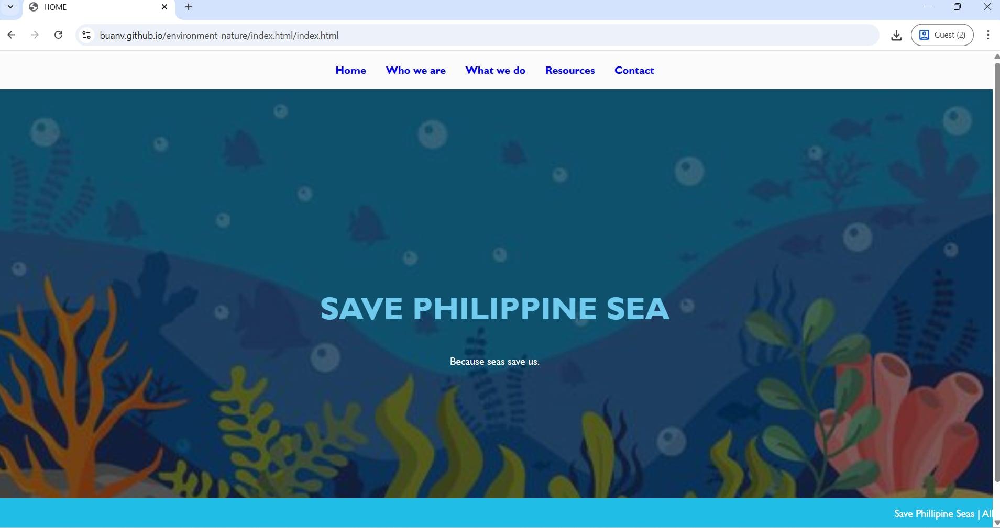
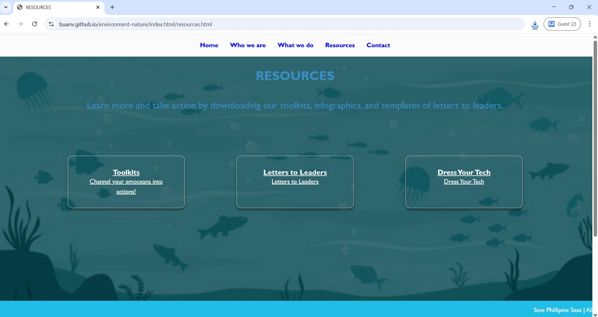

Webpage using HTML and CSS




an aspiring webpage designer passionate about
crafting clean, modern, and user-focused digital experiences.
I’m currently building my skills in web design,
with a focus on layout, visual design, and responsive interfaces.
I enjoy turning ideas into functional and engaging websites
while continuously learning new tools and techniques to improve my work.
As I grow my portfolio,
I’m excited to take on creative projects that challenge me and help me develop as a designer.
I have hands-on experience working with HTML, CSS, and databases,
allowing me to build and manage basic web applications.
I am skilled in creating structured and visually appealing web pages
using HTML and CSS, and I have successfully developed a complete
one-page website that demonstrates my ability to design layouts,
style content, and ensure a clean user interface.
Additionally, I have foundational knowledge in working with databases,
including organizing, storing, and retrieving data to support web
functionality.